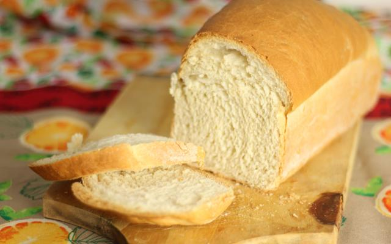

Pão Caseiro

Ingredientes (3 porções)
- 1 kg de farinha de trigo aproximadamente
- 1/2 xícara de água morna
- 2 ovos
- 4 colheres (sopa) de açúcar (aprox. 200 g)
- 1 e 1/2 xícara de leite morno (aprox. 400 ml)
- 1/2 xícara de óleo (aprox. 100 ml)
- 1 colher (sopa) de sal
- 10 g de fermento biológico seco
Modo de Preparo
- Em uma tigela, dissolva o fermento no açúcar e acrescente o sal, os ingredientes líquidos, os ovos e misture muito bem.
- Acrescente aos poucos a farinha até formar uma massa macia e sove bem a massa.
- Deixe a massa descansar por aproximadamente 1 hora.
- Após o crescimento, divida a massa, enrole da forma que desejar, coloque nas formas e deixe crescer até dobrar de volume.
- Leve para assar em forno médio (200° C), preaquecido, por aproximadamente 30 minutos.
- Retire o pão do forno e pincele leite para a casca ficar mais macia.
← Voltar para as receitas